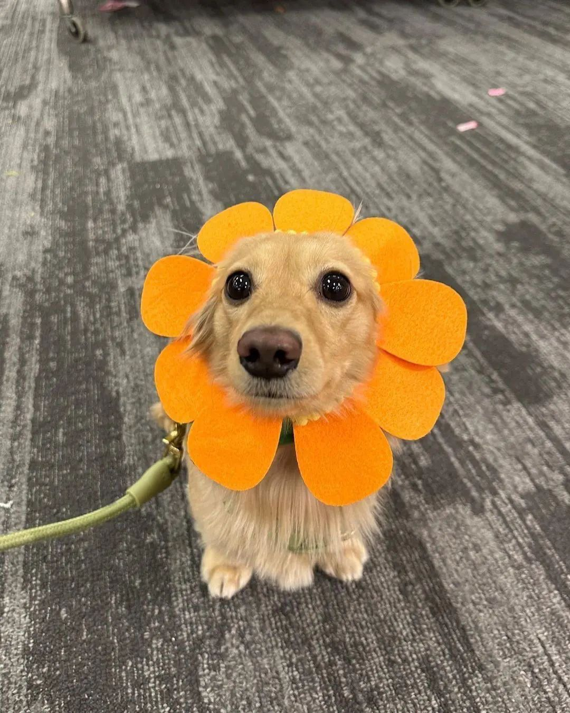
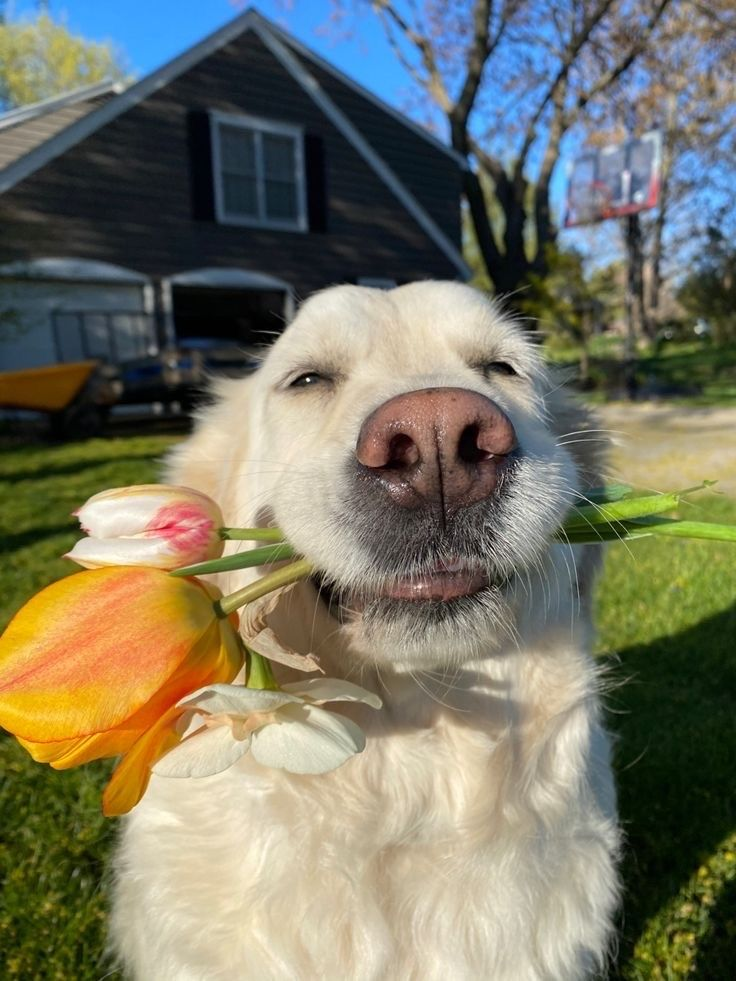

Para mi Valuu
Un pequeño detalle hecho con cariño, solo para ti Valuu 💗🌻

Las flores de hoy fueron solo un pequeño detalle,
porque alguien tan especial como tú merece muchos más 🌻

Cada flor representa lo especial que eres para mí 💗

Querida Valuu,
Hoy quería dejarte este pequeño detalle, algo sencillo pero hecho con mucho cariño. Porque a veces las palabras se quedan cortas para decir lo que uno siente, pero aun así vale la pena intentarlo.
Desde que llegaste a mi vida, muchos momentos simples se volvieron especiales: las risas, las conversaciones largas, los pequeños instantes que parecen no tener importancia, pero que terminan quedándose en el corazón.
Hoy pude darte flores amarillas en persona, pero también quería que te quedara este pequeño rincón hecho solo para ti, para recordarte lo mucho que significas y lo feliz que me hace compartir momentos contigo.
Ojalá todavía nos queden muchos recuerdos por crear, muchas risas por compartir y muchos momentos que con el tiempo se conviertan en historias bonitas.
Porque al final, lo más valioso no son los lugares ni los días, sino la persona con quien decides vivirlos.
Y contigo, cada momento siempre vale un poco más. 💛
Con cariño,
Joji